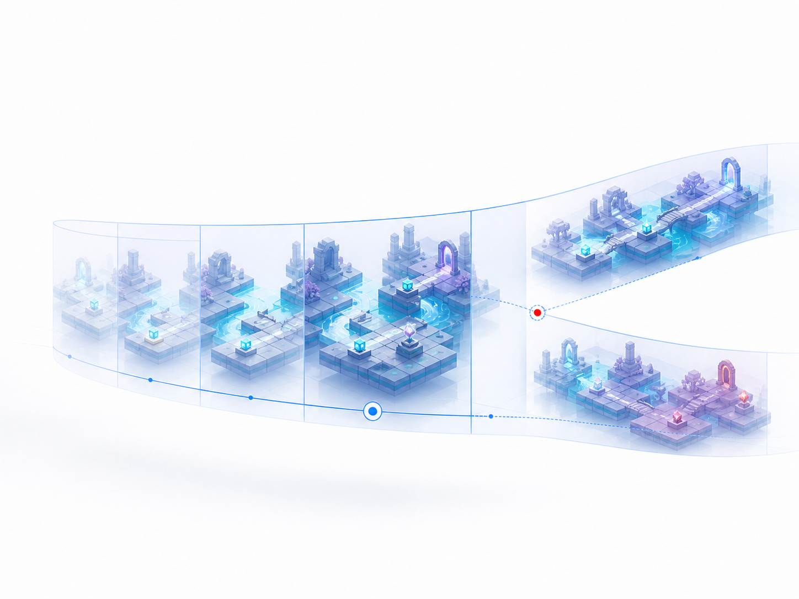
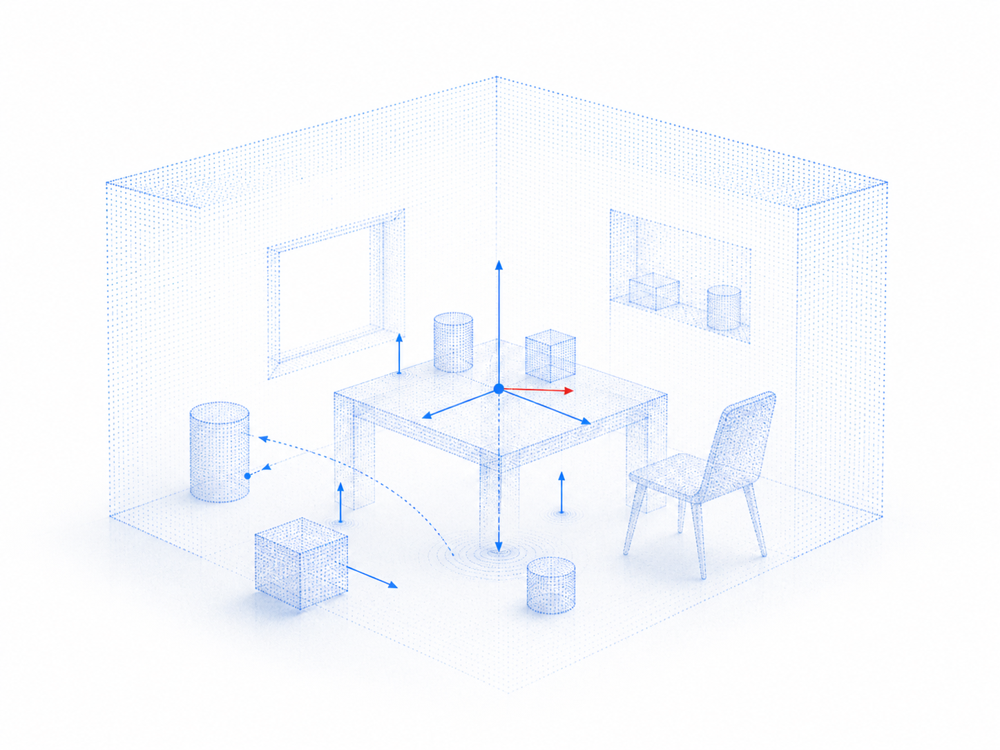
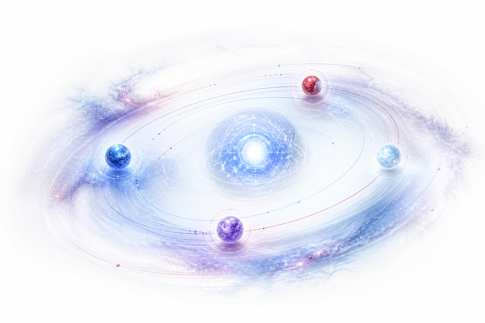
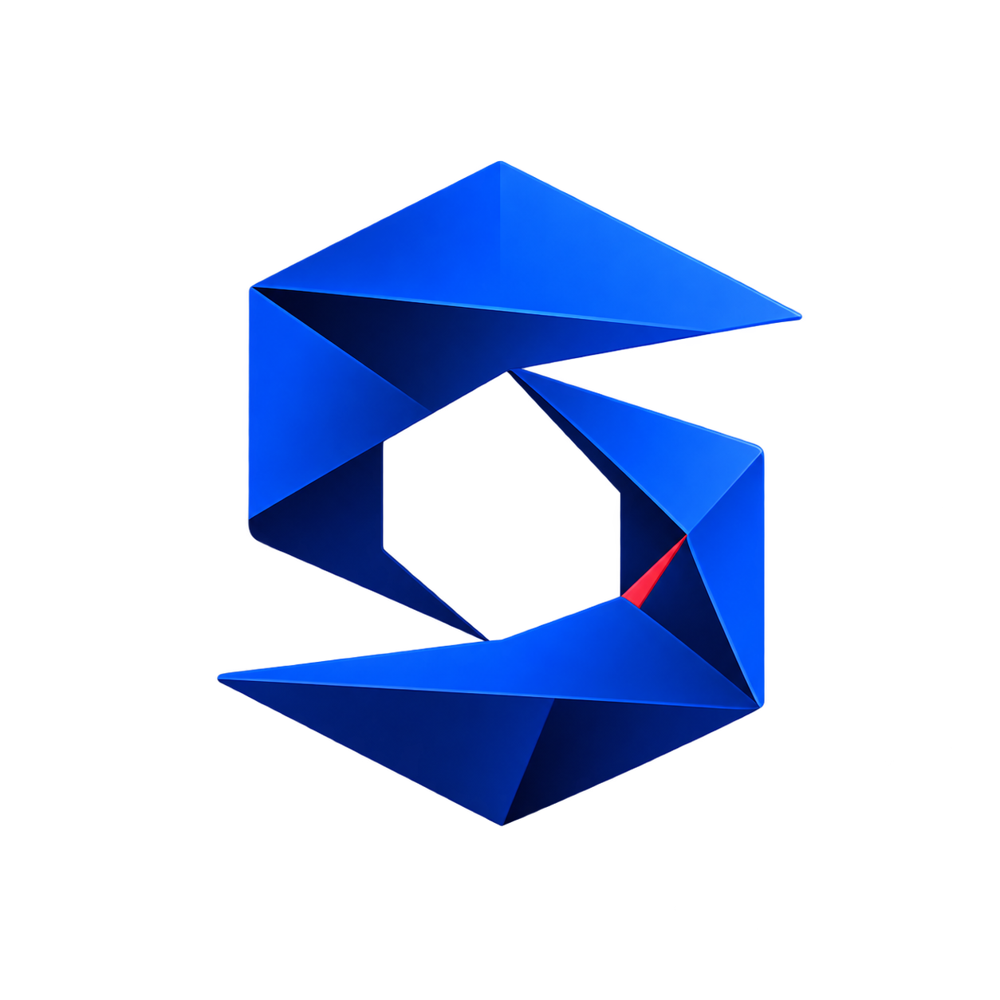

Embodied Intelligence
Agents that perceive, reason, and act in open worlds.
School of Electrical and Electronic Engineering
NTU Singapore
Four research territories, connected by a shared ambition: to build intelligence that can perceive, predict, and participate in the physical world.
Agents that perceive, reason, and act in open worlds.

Predictive representations for dynamic, interactive environments.

Geometry and physical priors for grounded intelligence.
Intelligence across vision, language, sound, and space.
Our work connects perception, simulation, reasoning, and control—because physical intelligence is not a single model, but a closed loop with the world.

Observe Model Reason Act
Grounded